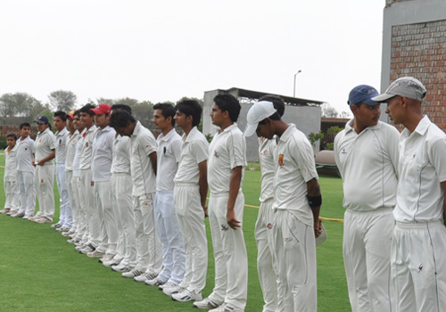

Our Club

The foundation of the Francis Cricket Club was laid by Vishwa Patkar with the sole aim of providing quality cricket training, world-class cricketing infrastructure, and opportunity to learn from experts in the field of cricket through a fun and innovative environment.
The flagship cricket academy was founded in 23-acre eco-friendly campus at Andheri, Mumbai in the year 2018, with an emphasis to provide students with best-in-class cricket facilities and training.
This all-year-round academy integrates the best in cricketing techniques, technology, and coaches to develop a World-Class Cricketer of Tomorrow.
For the overall development of the young cricketer, strength improvement through other games – swimming, tennis, football – mini tournaments, and sessions with specialists are organised, based on the ability, age group and expertise level of the players.